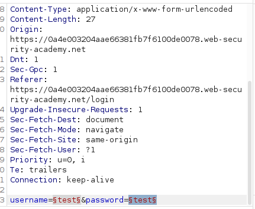
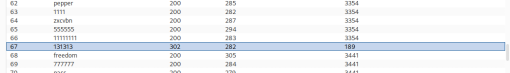

Username enumeration via different responses
- Provided with blog website and username and password wordlists that contain valid credentials.
- Navigated to /login on website
- Launched burpsuite and intercepted login attempt with credentials “test:test”:

- Forwarded request to intruder and used wordlists provided for sniper attack with username then sniper attack with password.
- This method was chosen due to username enumeration being possible and therefore being faster than a clusterbomb attack.
- Discovererd credentials “arizona:131313”. Mainly looked at status code and length differences in results of attacks:

- Logged in with discovered credentials and completed lab successfully: